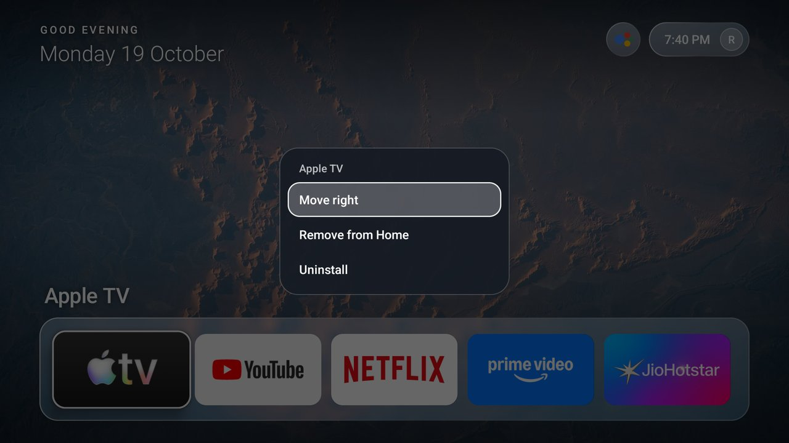

LUCERRA
LUCERRAUsing it
Home
Five favourites sit in the dock over a rotating NASA wallpaper. Move with Left and Right.
All Apps
Press Up from Home. With the accessibility service on, the remote apps button opens it too.
The hold-OK menu
Hold OK on any app to pin it to Home, move it left or right, or remove it.

Effects
Motion is spring-driven and interruptible. Set Effects: Reduced for a quieter, cheaper mode.
Configuration
Defaults live in app/src/main/res/values/config.xml. Wallpapers are in app/src/main/assets/wallpapers/.